![]()
Call:
lm(formula = Per_10.6 ~ Year, data = wh)
Residuals:
Min 1Q Median 3Q Max
-0.038200 -0.020285 -0.006718 0.008204 0.306583
Coefficients:
Estimate Std. Error t value Pr(>|t|)
(Intercept) -2.9939744 0.3134828 -9.551 2.46e-15 ***
Year 0.0015679 0.0001597 9.816 6.89e-16 ***
---
Signif. codes: 0 '***' 0.001 '**' 0.01 '*' 0.05 '.' 0.1 ' ' 1
Residual standard error: 0.04101 on 90 degrees of freedom
Multiple R-squared: 0.517, Adjusted R-squared: 0.5117
F-statistic: 96.35 on 1 and 90 DF, p-value: 6.895e-16Time Series
Fall 2025
Frequency of witch hunt by decade
Frequency of witch hunt by decade, with CIs
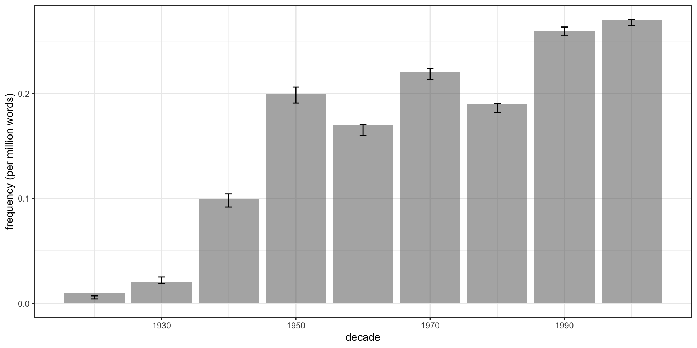
Frequency of witch hunt by decade
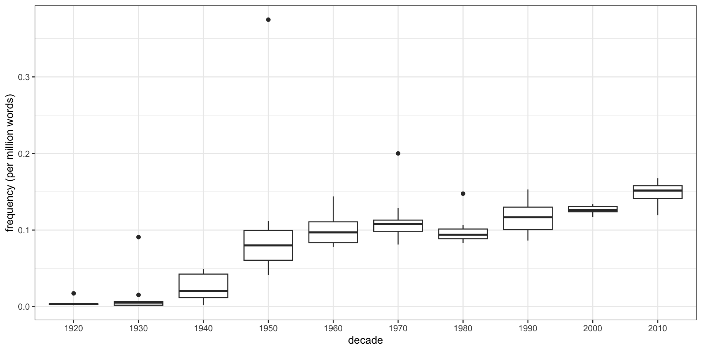
Frequency of witch hunt by year, with trend line
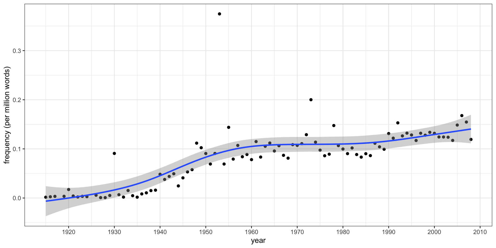
Does this data show a trend?
Measuring trends
Detecting simple linear trends
- A simple way to check for trends is to use a linear model
- If there’s a nonzero slope, there’s a time trend
- Linguists sometimes use \(R^2\) to quantify the strength of the trend
Trends in witch hunt
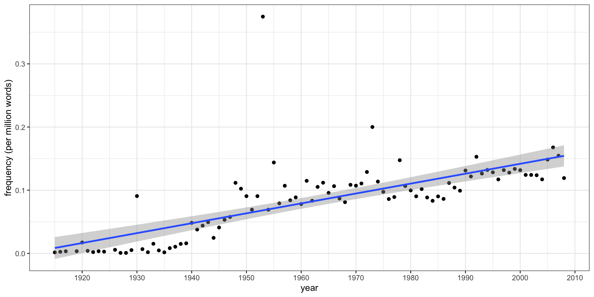
Summarizing the trend
Danger!
- This only measures linear trends
- \(R^2\), as a measure of “variance explained”, is not quite as intuitive as it seems
Peaks and troughs
How do we detect peaks or troughs in usage?
- A word’s usage may peak at specific times, or it may go through times of low use
- e.g., a word becomes briefly popular due to a cultural trend
- How can we distinguish such a shift from random variation?
Nonlinear smoothers
- We can fit a nonlinear smoother to the data, i.e., a regression that allows nonlinear trends
- Many such smoothers can produce confidence intervals
- Individual observations outside the CI can indicate peaks or troughs
- Frequently done with smoothing splines, as fit by
mgcv’sgam()function
Peaks and troughs in witch hunt

Time periods
Can we break the data into time periods?
- To periodize a time series is to split it into distinct time periods
- If there’s a sudden change in use after 1945, maybe there’s a pre-1945 period and a post-1945 period
- Statistically, we can think of this several ways:
- Test if two periods are different: simple hypothesis testing
- Detect where the mean or slope suddenly changes: changepoint detection
- Cluster sequences of similar years: clustering
Variability-based neighbor clustering
- VNC is an adaptation of hierarchical clustering
- Any time point can be merged with an adjacent time point
- Linkage is the change in standard deviation (or coefficient of variation) when merged
- Produces a dendrogram just like hierarchical clustering
Clustering decades
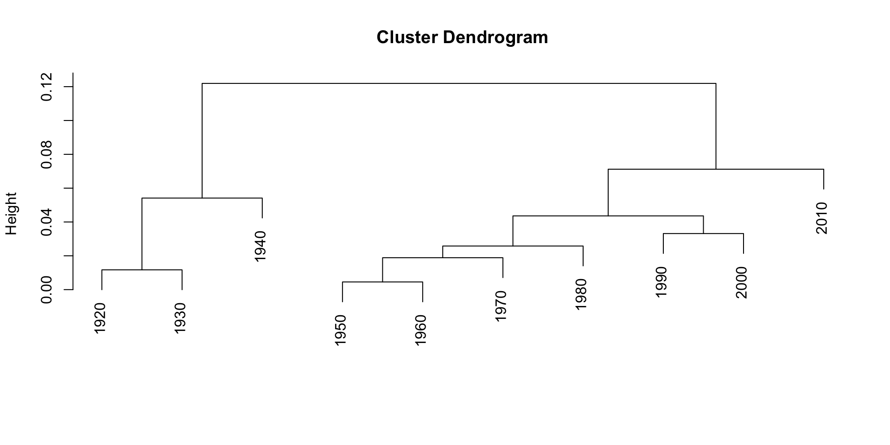
Clustering years
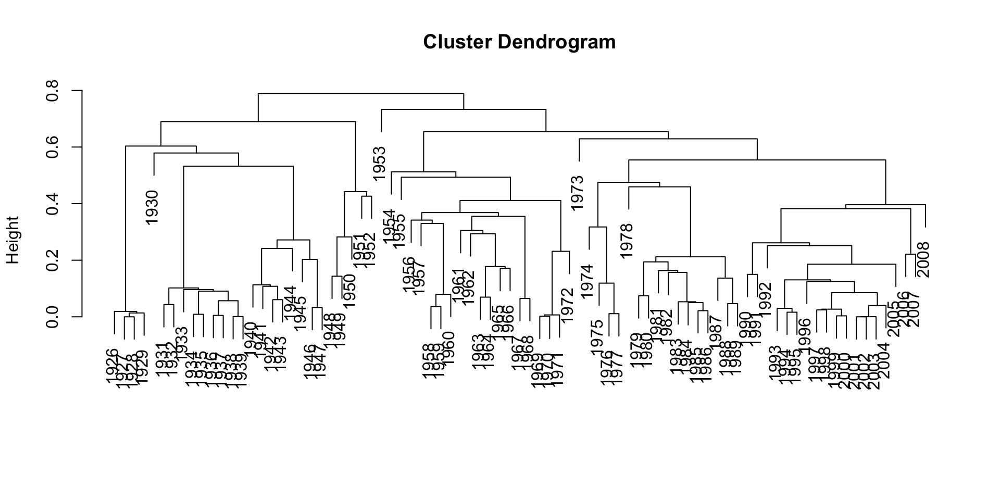
Scree plot
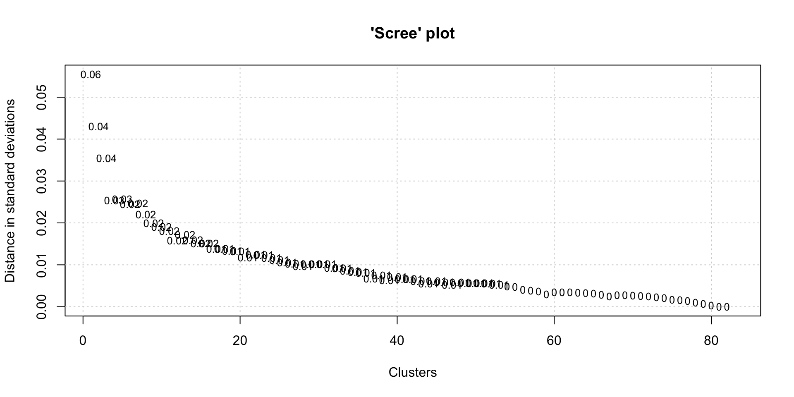
Changes in pronoun use
Do pronouns suggest greater individualism?
Twenge, Campbell, and Gentile (2013) claim that:
Changes in pronoun use in American books suggest a cultural trend toward greater individualism and a parallel trend toward less collectivism. First person plural pronouns such as “we” decreased in use by 10%, and singular pronouns such as “I” and “me” increased 42%. Previous research linked first person singular pronouns to individualism and first person plural pronouns to collectivism (e.g., Gardner et al., 1999; Kashima & Kashima, 1998; Na & Choi, 2009).
Second person pronouns such as “you” and “your” quadrupled, also consistent with individualism, as they separate the actor and other (Wechsler, 2010). The large increase in second person might partially reflect an increased tendency to directly address the reader and include him or her in the dialogue, another indicator of individualism (e.g., “what you can do,” “your best life”). However, this is speculative.
Their Figure 1
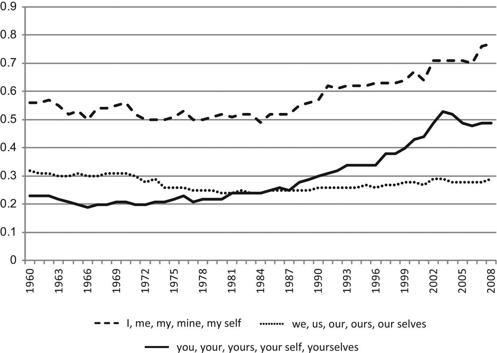
Changes in pronoun use in American books
We can replicate this ourselves:
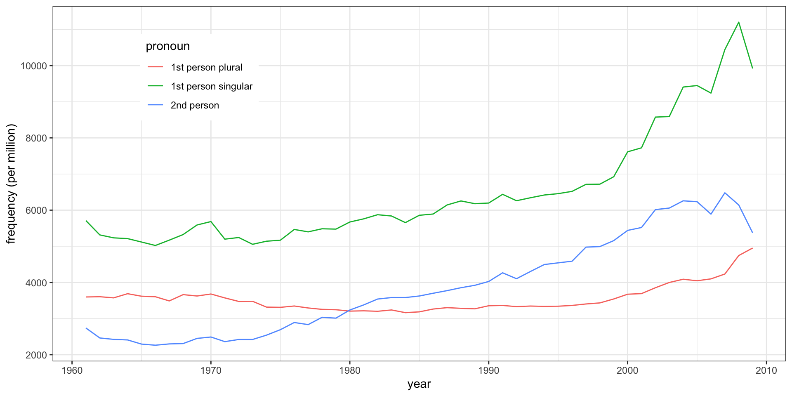
Why 1960 as the starting point?
We chose 1960 as a starting point because many authors have noted that the pace of cultural change in the United States, particularly in individualism, accelerated beginning in the late 1960s through the 1970s…
But we can easily include older data to see what happens
Changes in pronoun use since 1900
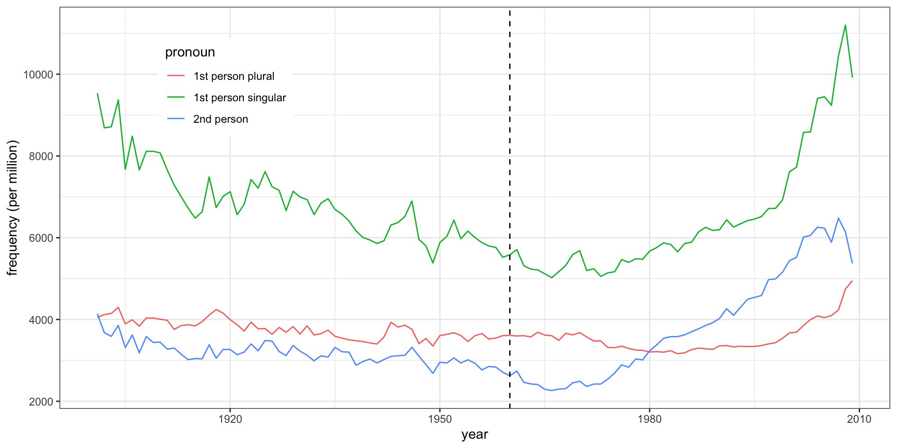
Changes in pronoun use in American books, smoothed
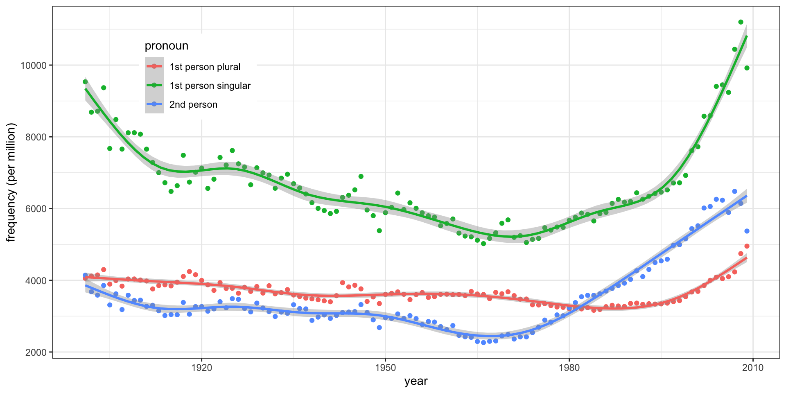
What about longer trends?
Google Books has older books, so we can look back further:
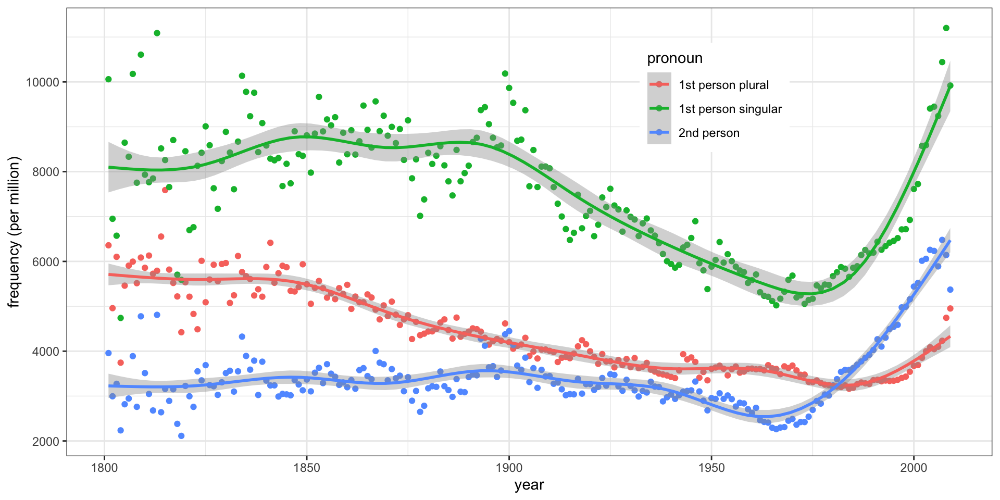
Works cited
Twenge, Jean M., W. Keith Campbell, and Brittany Gentile. 2013. “Changes in Pronoun Use in American Books and the Rise of Individualism, 1960-2008.” Journal of Cross-Cultural Psychology 44 (3): 406–15. https://doi.org/10.1177/0022022112455100.